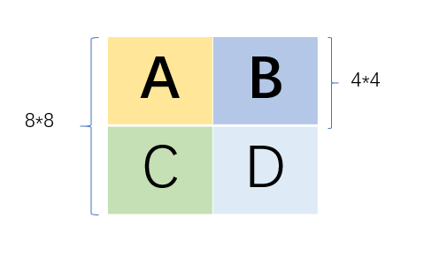
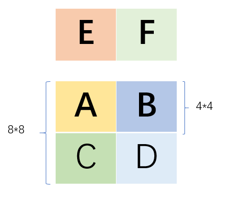

本实验是CSAPP第三版配套实验中的第五个实验，对应书本第六章《存储器层次结构》，准确来说，是其中有关于缓存部分的知识。本实验共分为两部分：第一部分要求实验一个简易的缓存架构，接收一系列指令，模拟指令hit和miss的过程，如果指令miss，需要根据LRU策略来替换缓存项；第二部分是编写缓存友好的矩阵转置算法，要求矩阵转置尽可能多的hit缓存，减少内存访问的次数，这一部分很有意思，一共只测试3个矩阵，题目暗示可以针对每个矩阵做特别的优化。完成这一实验可以加深对缓存的认识，以及理解为什么同样是计算一个矩阵转置/乘积，有些算法就是比其他算法快，或者说，可以体会到矩阵加速运算的精髓所在。这里是我的完整实现。
Part1——实现缓存架构
这一部分要求模拟缓存结构。
实验说明
函数接收四个参数s，E，b，t，sEb分别对应于缓存的组S=2^s,每组中的行数E以及每个缓存项中的字节B=2^b,而t代表存储指令的文件。没错，这里要求你手动读取文件获取每一条指令，指令的形式如下：
1 | I 0400d7d4,8 |
文件中一共有四种指令，第一种I开头，单纯的指令不涉及数据存储，忽略；后面三种，各自以空格开头，涉及到数据的存取：
- M修改数据，一次读数据后紧接着一次写数据。
- L加载数据，仅仅读一次数据。
S保存数据，仅仅写一次数据。
这三条指令的形式如下：[space]operation address,size
显然，我们可以通过判断一条指令是否是空格开头来判断是否需要访问缓存。
实验分析
在正式写代码前，我们需要对实验要求和内容做具体分析，设计相应的数据结构和函数。
首先，一条命令的执行逻辑如下：
- 是否是I指令，如果是，忽略，如果不是，开始执行。
- 判断指令是否命中。
- 如果不命中，判断缓存是否有空余项，如果没有，使用LRU替换最久没有使用的缓存。
在这里，每条指令的缓存标记等于
标记 = 地址右移 (s + b）位
注意，别看有的文件里地址很像10进制，其实通通都是16进制！
接下来我们需要思考整个框架的逻辑：
- 接收参数，根据sEb初始化缓存项。
- 从t指示的文件中逐条读取指令并模拟从缓存中加载数据的过程。
然而这里有个问题，这里每条指令是割裂的，当缓存缺失然后加载数据时，我怎么知道这条指令之外的同一个缓存项中的其他数据在哪里？想到这里，突然发现，程序的目的仅仅只是模拟缓存命中/缺失的过程，而不要求真的加载和保存数据？如此一来，并不需要真的malloc新的内存来保存地址，有了这个认识可以大大简化代码。
有了上述的分析，我们可以很轻易的设计出两个相关的数据结构：
- targets[S][E]，用来判断特定组，特定行的标记，用于比较某个地址指示的数据是否在缓存中。
- used[S][E],判断这个缓存是否有效，初始化为-1，代表缓存无效，可用；同时用来记录每个缓存项访问的次数，用于LRU替换。
具体实现
下面逐一分析每一模块的具体实现。
读取参数
我这里定义了一个结构体传递参数，具体做法是判断调用函数时的参数，逐一解析相关的参数和对应的值，如果有错误，则返回正确的函数调用方式。
1 | struct myCachePara{ |
下面提示正确的函数调用方式，以及检查参数值是否合法。1
2
3
4
5
6
7
8
9
10
11
12
13
14
15
16
17
18void usage(char *func){
printf("Usage: %s [-hv] -s <s> -e <e> -b <b> -t <tracefile>\n", func);
exit(0);
}
int checkPara(char arg[], char *func){
//检查是否能读取相应参数
int len = strlen(arg);
int temp = 0;
for(int i=0; i<len; i++){
if(arg[i] < '0' || arg[i] > '9'){
usage(func);
}
// 数据量太小，不需要考虑溢出
temp = temp*10 + (arg[i] - '0');
}
return temp;
}
主函数
主函数里的逻辑：
- 根据参数初始化targets和used数据结构。
- 从文件中逐行取出指令。
- 判断指令是否需要执行。
- 解析指令，获得相应的操作和地址。
- 执行指令。
1 | int main(int argc, char* argv[]) |
在获取地址后，需要将其转化为10进制，方便后续计算出对应的标记。1
2
3
4
5
6
7
8
9
10
11
12
13
14
15
16
17
18
19
20unsigned int toTen(char *addres){
//将字符串形式的6进制地址转换为10进制数字
unsigned int res = 0;
char c;
for(char *p = addres; *p != '\0'; p++){
c = *p;
if(c >= '0' && c <= '9'){
res = res * 16 + (c - '0');
} else if(c >= 'a' && c <= 'z'){
res = res * 16 + (c - 'a') + 10;
} else if(c >= 'A' && c <= 'Z'){
res = res * 16 + (c - 'A') + 10;
}else{
printf("Something wrong in decode addres\n");
printf("Wrong address:%c\n", c);
exit(3);
}
}
return res;
}
缓存置换
在这里我使用数组形式的LRU来进行缓存替换。数组形式的LRU算法逻辑如下：
- 定义一个数组，初始化为0，数组每一项对应每一条缓存的空闲次数。
- 每当需要加载新数据时，如果缓存命中，对应的数组元素置0，其余元素+1.
- 需要替换缓存中，直接替换掉元素值最大的项即可。
数组形式的LRU每次都遍历整个数组，不及链表形式的方便，但是胜在实现简单。在本实验中数组实在是太小了，所以用数组形式的LRU就足够了。
此外，这里的数组我初始化为-1，-1代表这一项缓存还未使用。
1 | void exectOp(int targets[], int used[], int E, int target, char *str){ |
Part2——实现缓存友好的矩阵转置
这一部分要求实现miss尽可能少的矩阵转置算法，官方文档给了一个编写缓存友好矩阵算法的思路参考。
实验要求
- 每次转置最多只能使用12个局部int变量，且不允许定义数组。
- 测试的缓存是s=5,E=1,b=5,表示如果组号相同，就会发生缓存替换。
- 测试程序只会调用3232，6464，61*67三个矩阵进行测试，可以对三者分别进行优化。
不允许定义数组的原因，可能是数组的内容存储在内存，读取数组会引发额外的缓存替换，而局部变量保存在寄存器中，读写局部变量不会引起缓存冲突。
32*32
测试中一个缓存块保存32个字节的数据，相当于一个缓存块保存8个数字，如此一来，先试试简单的8*8分块：1
2
3
4
5
6
7
8
9
10void transpose_submit(int M, int N, int A[N][M], int B[M][N])
{
int block = 8;
for(int i = 0; i < N; i += block)
for(int j = 0; j < M; j += block)
for(int ii = i; ii < i + block; ii++)
for(int jj = j; jj < j + block; jj++){
B[jj][ii] = A[ii][jj];
}
}
结果是：
hits:1710, misses:343, evictions:311
并没有达到官方示例的效果。打开traces.f0观察了一下，发现A的首地址应该是602100，B的首地址是642100。进而发现，当对角块进行转置时，会不断的发生块冲突！
这是由于，s=5，所以一共5组，而E=1，b=5，代表每一个缓存块保存32字节，8个int数字，且如果两个地址映射到同一个组且标志不同，就会发生块置换！而这里A和B首地址的中间5位是相同的，这代表着A和B第一行前8个数字会映射到同一个缓存块上，第二行的前8个数字会映射到同一个缓存块上，而我这里以8为大小分块，那么，对于第一个8*8的块，当取A的第一行并赋值给B时，A发生2次miss，B发生8次miss，为什么A发生两次miss？第一次是访问A[0][0],然后赋值给B[0][0]，而两者映射到同一个块，所以把A第一行的缓存挤出去了，当加载A[0][1]时，需要重新加载缓存，所以miss了2次。接下来A取第二行并赋值给B时，取A[1][0]miss一次，保存B[0][1]miss一次，保存B[1][1]miss一次并把A给挤出去，取A[1][2]miss一次，一共miss4次，可以以同样的方式推算后续列，最后算出来第一个块miss了38次。（10+4*7）。
既然问题出现在对角的转置上，那么我每次把第一列的8个数字赋值8个局部变量，然后再将这8个局部变量赋值给B的第一列，不就避免了对角元素冲突的问题吗。这样一来，每一行Amiss 1次，B第一列miss8次，然后后面每一行miss1次，总共23次，哦豁，miss次数肉眼可见少了。然后就有了下面的版本。
1 | void transpose32(int M, int N, int A[N][M], int B[M][N]){ |
结果：
hits:1766, misses:287, evictions:255
一共定义了12个局部变量，达到官方示例的效果了。
64*64
用上面的代码跑一下M=N=64的情况，发现miss 4723项。看一下traces，发现相差为4的行会映射到同一个缓存，也就是说同一列，第i,i+4,i+8…行的数据会映射到同一个缓存中，且A和B同一行同一列也会映射到同一个缓存项中。所以如果选择block=8，那么缓存冲突的概率会急剧增大，所以首先想到就是选择block=4。可以，现在的miss是1699，然而并没有小于1300。
深入思考一下，64*64中分为两种8*8块，一种是对角线上的块，A和B相互冲突的同时，AB上面四行和下面四行也会相互冲突；其他块中，A和B是不会冲突的，只有内部上下四行冲突。因此，对于非对角块，可以将miss压缩到20次，如下：

A和B，C和D在同一个缓存块中，ABCD各是4*4的小方块，假设此时矩阵A的ABCD转置到矩阵B的EFGH中，那么首先取A，miss4次，A放E，miss4次；取C，miss4次，C放到F，缓存命中；取D，缓存命中，放H，miss4次，取B，miss4次，放G，缓存命中。一共 miss20次。
而对于对角块，如果将8*8的对角块分解为4个4*4的小方块，那么需要miss44次。而这里可以将miss降低为37次。首先取A第一行的8个元素放到局部变量中，前四个元素放到B的左上矩阵，右四个元素本来应该放到B的左下矩阵，但是我们先放到B的右上矩阵中，此时缓存命中。重复四次，直到将A的上面4行转置完，一共miss了4+4+3=11次。此时B的右上矩阵存放的就是B左下矩阵的内容，每次读取B右上矩阵四个元素并放到B左下矩阵，一共miss4次。然后B的右上和右下矩阵，只能拆解为2个4*4的矩阵，每个矩阵需要miss11次，所以一个对角块共miss11+4+11*2=37次。
如此一来，理论上整个矩阵一共miss 37*8+20*56=1416次。
代码如下：
1 | void transpose64_diagonal(int M, int N, int A[N][M], int B[M][N]){ |
结果：
hits:7034, misses:1419, evictions:1387
和理论分析的差不多，多了三次可能是初始化引起的额外缓存缺失。
虽然比起一开始无脑分块已经有了很大改进，但是miss次数仍旧大于1300。这时候重读题目，发现一句话“不能修改A的内容，但是可以对B为所欲为”，这句话启发了我。在上面的例子中，我是将一个8*8分解为4个4*4的块，并且将B左下的块先缓存到B右上里。这里先插播一段信息，观察64*64矩阵，可以发现，如果将64*64分解为64个8*8的块，那么同一列的子块将会引发缓存冲突，而不同列的子块是不会引起缓存冲突的！因此，如果我固定住左上角的子块，对应缓存组号[0，8， 16， 32]，对于其它的块，我将左下矩阵缓存到B的第一个块中，就能将miss减少到每个块16次了。下面具体分析：
假设我们固定住B的第一个块，对应缓存组号[0,8,16,32]，那么整个矩阵可以分为四种块：
- B第一个块，只能使用上述miss37次的方法。
- 和B第一个块同一行，同一列的其他块，这些块中，A或者B会用到同样的缓存，所以只能使用上述miss20次的方法。
- 剩下一个7*7的块中，对角块可以减少到miss24次，其他块可以减少到16次。

对于miss16次的其他块，假设要将矩阵A的ABCD四个块放到矩阵B的MNXY四个块，而EF代表矩阵B用来缓存的左上角第一个8*8块的上面两个4*4子块：
- 取A放到M中，共miss8次，取B放到E中。
- 取C放到N中，miss4次，取B和D放到XY中，miss4次。合计miss16次。
对于剩下7*7个块中的对角块：
- 取AB放到EF中，miss4次，将A放到M中，B放到X中，miss8次。
- 重复上面的操作转置CD，合计12*2=24次。
因此，理论上miss次数=37+14*20+16*42+24*7=1157。
代码如下：1
2
3
4
5
6
7
8
9
10
11
12
13
14
15
16
17
18
19
20
21
22
23
24
25
26
27
28
29
30
31
32
33
34
35
36
37
38
39
40
41
42
43
44
45
46
47
48
49
50
51
52
53
54
55
56
57
58
59
60
61
62
63
64
65
66
67
68
69
70
71
72
73
74
75
76
77
78
79
80
81
82
83
84
85
86
87
88
89
90
91
92
93
94
95
96
97
98
99
100
101
102
103
104
105
106
107
108
109
110
111
112
113
114
115
116
117
118
119
120
121
122
123
124
125
126
127
128
129
130
131
132
133
134
135
136void transpose64_3part(int M, int N, int A[N][M], int B[M][N]){
//左上角四个，对应缓存项0 8 16 24的缓存项作为中间值
int a1, a2, a3, a4, a5, a6, a7, a8, i, j, t, b;
for(i = 8; i < N; i += 8)
for(j = 8; j < N; j += 8)
if(i != j){
//处理8×8中的左上4×4小矩阵
for(t = 0; t < 4; t++)
for(b = 0; b < 4; b++){
B[b+j][t+i] = A[t+i][b+j];
//A上面4×8的小矩阵，左边4×4直接转置，右边放到B[0-4][0-4]保存
B[t][b] = A[t+i][j+b+4];
}
for(t = 0; t < 4; t++)
for(b = 0; b < 4; b++){
//一个缓存 八个数字，所以B[b+j[t+t+4]还在缓存中
B[b+j][t+i+4] = A[t+i+4][b+j];
}
for(t = 0; t < 4; t++)
for(b = 0; b < 4; b++){
B[b+j+4][t+i] = B[t][b];
B[b+j+4][t+i+4] = A[t+i+4][b+j+4];
}
}
else{
//对角线A和B会冲突
//A上面两个4×4快
for(t = 0; t < 4; t++)
for(b = 0; b < 8; b++)
B[t][b] = A[i+t][j+b];
for(t = 0; t < 4; t++)
for(b = 0; b < 4; b++)
B[j+b][i+t] = B[t][b];
for(t = 0; t < 4; t++)
for(b = 4; b < 8; b++)
B[j+b][i+t] = B[t][b];
//A下面两个4×4块
for(t = 4; t < 8; t++)
for(b = 0; b < 8; b++)
B[t][b] = A[i+t][j+b];
for(t = 4; t < 8; t++)
for(b = 0; b < 4; b++)
B[j+b][i+t] = B[t][b];
for(t = 4; t < 8; t++)
for(b = 4; b < 8; b++)
B[j+b][i+t] = B[t][b];
}
//处理第一列8个8×8块
//处理第一个对角块
i=0;
j=0;
for(t = 0; t < 4; t++){
a1=A[i+t][j], a2=A[i+t][j+1], a3=A[i+t][j+2], a4=A[i+t][j+3];
a5=A[i+t][j+4], a6=A[i+t][j+5], a7=A[i+t][j+6], a8=A[i+t][j+7];
B[j][i+t] = a1;
B[j+1][i+t] = a2;
B[j+2][i+t] = a3;
B[j+3][i+t] = a4;
//为防止冲突，剩下四个先放在右边4×4的子矩阵
B[j][i+t+4] = a5;
B[j+1][i+t+4] = a6;
B[j+2][i+t+4] = a7;
B[j+3][i+t+4] = a8;
}
//B左下矩阵，将右边的子矩阵放到下面
for(t = 0; t < 4; t++){
a1 = B[j+t][i+4];
a2 = B[j+t][i+5];
a3 = B[j+t][i+6];
a4 = B[j+t][i+7];
B[j+4+t][i] = a1;
B[j+4+t][i+1] = a2;
B[j+4+t][i+2] = a3;
B[j+4+t][i+3]= a4;
}
//处理B右上、右下两个子矩阵，完全冲突，只能4×4的块来搞。
//也就是处理A左下和右下两个子矩阵。
for(b = 0; b < 4; b++){
a1=A[i+4+b][j], a2=A[i+4+b][j+1], a3=A[i+4+b][j+2], a4=A[i+4+b][j+3];
B[j][i+4+b] = a1;
B[j+1][i+4+b] = a2;
B[j+2][i+4+b] = a3;
B[j+3][i+4+b] = a4;
}
for(b = 0; b < 4; b++){
a1=A[i+4+b][j+4], a2=A[i+4+b][j+5], a3=A[i+4+b][j+6], a4=A[i+4+b][j+7];
B[j+4][i+4+b] = a1;
B[j+5][i+4+b] = a2;
B[j+6][i+4+b] = a3;
B[j+7][i+4+b] = a4;
}
//处理第一列和第一行剩下7×2个8×8块
j=0;
for(i = 8; i < M; i += 8){
for(t = i; t < i + 4; t++)
for(b = j; b < j + 4; b++){
B[b][t] = A[t][b];
}
for(t = i ; t < i + 4; t++)
for(b = j + 4; b < j + 8; b++){
B[b][t] = A[t][b];
}
for(t = i + 4; t < i + 8; t++)
for(b = j + 4; b < j + 8; b++)
B[b][t] = A[t][b];
for(t = i + 4; t < i + 8; t++)
for(b = j; b < j + 4; b++)
B[b][t] = A[t][b];
}
i=0;
for(j = 8; j < M; j += 8){
for(t = i; t < i + 4; t++)
for(b = j; b < j + 4; b++){
B[b][t] = A[t][b];
}
for(t = i ; t < i + 4; t++)
for(b = j + 4; b < j + 8; b++){
B[b][t] = A[t][b];
}
for(t = i + 4; t < i + 8; t++)
for(b = j + 4; b < j + 8; b++)
B[b][t] = A[t][b];
for(t = i + 4; t < i + 8; t++)
for(b = j; b < j + 4; b++)
B[b][t] = A[t][b];
}
}
结果：
hits:9253, misses:1216, evictions:1184
额，结果比理论要多一些，可能是哪里没计算好吧，不过已经小于1300次了，ok。
61*67
这个矩阵不是8的倍数，不好整，看了地址，感觉规律不明显，试了大小为4、8、16的块，16恰好满足要求。代码如下：1
2
3
4
5
6
7
8
9void transpose17(int M, int N, int A[N][M], int B[M][N]){
int i, j, t, b;
for(i = 0; i < N; i += 16)
for(j = 0; j < M; j += 16)
for(t = i; t < min(i+16, N); t++)
for(b = j; b < min(j+16, M); b++){
B[b][t] = A[t][b];
}
}
测试结果
1 | sworduo@ubuntu:~/Documents/CSAPP/labs/lab5-cache$ ./driver.py |
总结
完成这个实验之后，我脑海中浮现的第一件事情是快速排序和堆排序，当时学算法的时候就奇怪，明明堆排序哪方面都和快排差不多，而且比快排稳定，为什么用的人都这么少。后来学完操作系统，我才意识到可能是缓存的问题，堆排序实在是对缓存太不友好了。编写对缓存友好的代码，不是一件容易的事情，往往会降低代码的可读性，而且在计算机性能日渐提升的今天，已经不太需要去关注缓存命中的问题了，很多时候这都不是瓶颈。类似于屠龙之术，平时没什么用处，但是在关键时刻可以力挽狂澜。